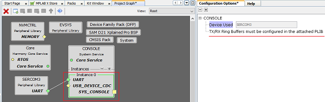
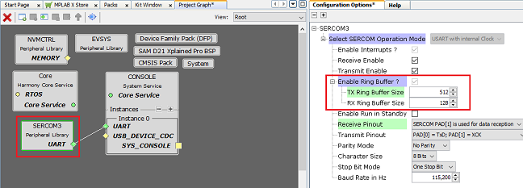
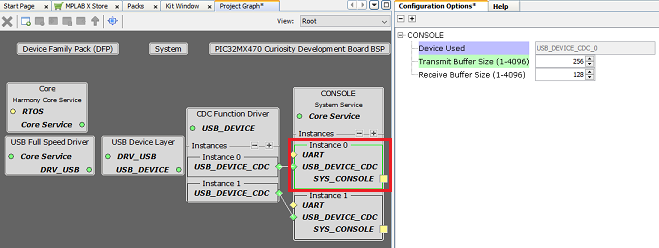

|
MPLAB Harmony Core Help
|
The Console System Service library should be configured through the MHC.
UART Console:
The following figure shows the MHC configuration window for configuring the UART Console Device and a brief description of various configuration options. The console system service requires the connected UART peripheral library to be configured in the interrupt mode.


Note: The TX/RX ring buffers must be configured in the attached PLIB as shown above. In the above example, the TX and RX ring buffer sizes are configured in the attached SERCOM3 PLIB.
USB Console:
The following figure shows the MHC configuration window for configuring the USB Console Device and a brief description of various configuration options.

|
MPLAB Harmony Core Help
|